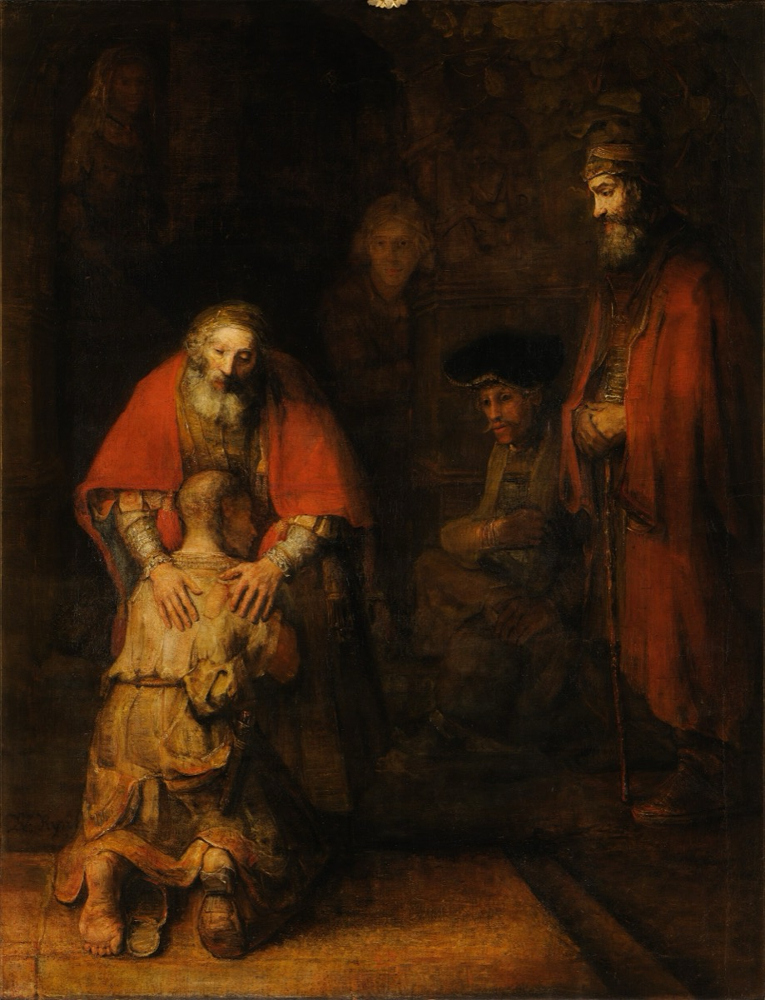

The Bridegroom
The Parables on the Road and in the Temple
And at midnight there was a cry made, Behold, the bridegroom cometh; go ye out to meet him.
Matthew 25:6

The talks
This cohort does not use the usual seats either. These are the later parables, told on the road through Perea and Judea and then in the temple during his last week. Each of you takes one. Every talk must carry the first-century detail that unlocks the story, or it will come out as a moral with no ground under it.
- The Unmerciful Servant Matthew 18:21-35. Find out what ten thousand talents was worth against a hundred pence. The ratio is the parable. Do the arithmetic and give us the number.
- The Good Samaritan Luke 10:25-37. Find out what the road from Jerusalem to Jericho was, what a Samaritan was to a Jew, why a priest and a Levite might have had a legal reason to pass by, and what two pence bought.
- The Lost Sheep and the Lost Coin Luke 15:1-10. Notice what Luke says in verses 1 and 2 about who was standing there and what they were complaining about. Everything in this chapter is an answer to that complaint.
- The Prodigal Son Luke 15:11-32. Do not stop at the younger son. The estate was already divided, the father ran in public when men of standing did not run, and the story ends without telling us what the elder brother did.
- The Rich Man and Lazarus Luke 16:19-31. The only parable in which a character is given a name. Find out why that is unusual and what the ending says about evidence and belief.
- The Pharisee and the Publican Luke 18:9-14. Two men in the temple. Find out what a publican did for a living and why the crowd would have assumed the Pharisee was the good one.
- The Marriage of the King's Son Matthew 22:1-14. Told in the temple during the last week. Find out what refusing a king's invitation meant, and deal with the man without a wedding garment rather than skipping him.
- The Ten Virgins Matthew 25:1-13. Find out how a first-century wedding actually worked, why the bridegroom was delayed, and what the oil was for. Then answer why the wise ones would not share.
The title
He takes this title early, and he takes it in an argument. In Matthew 9 people ask why his disciples do not fast, and he answers that the children of the bridechamber cannot mourn while the bridegroom is with them, but the days will come when he shall be taken from them. That is the first time he says out loud that he is going to be taken away, and he says it inside a wedding image. By the last week of his life the same picture has turned into a warning. In Matthew 25 the bridegroom is delayed until midnight, and half the party is not ready when he finally comes. This cohort runs from the parables he told walking the roads of Perea, which are mostly about being found, to the parables he told in the temple courts with days left, which are mostly about being ready. Both halves belong to the same title. He is the one who comes for his own, and he is the one who is coming later than anyone expected.
Required reading, for every speaker in this cohort
- Luke 15, straight through
- Luke 10:25-37 and 16:19-31
- Matthew 18:21-35
- Matthew 22:1-14 and 25:1-13
- Matthew 9:14-17
Questions for thought
- Luke 15 opens with Pharisees complaining that he receives sinners and eats with them. All three parables in that chapter answer that complaint. How does each one answer it differently?
- Do the arithmetic on ten thousand talents against a hundred pence. How many years of wages is each? What does the parable lose if you skip the numbers?
- The father in Luke 15 runs. Find out what running in public would have cost a man of standing in that culture.
- The prodigal's story ends resolved and the elder brother's does not. Why leave it open?
- A lawyer asks who is my neighbour, and the answer makes the hero a Samaritan. What would that have done to the man who asked?
- The rich man is unnamed and the beggar is named Lazarus. Find out how unusual that is in a parable and what it might mean.
- In Matthew 25 the wise virgins refuse to share their oil. That looks unkind. What is the oil, and can it be shared?
- Find out what a first-century wedding actually involved and why a bridegroom would be delayed until midnight.
- Half of these parables are about being lost and half are about being late. Which of the two is your real risk?